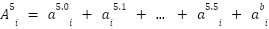
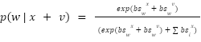
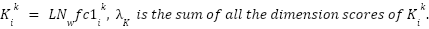

What are residual streams?
> Residual streams are an essential component of the transformer architecture. They serve two essential purposes : accumulation of information and communication between the layers. The residual stream allows each layer of the transformer to read and write information to a shared communication “channel” or “space”.
> A simple illustration showing various operations taking place in the residual stream of a transformer model:
Why is it important to understand the residual stream of a transformer?
> Let’s take an example to see why it is important to understand the residual streams of the transformers.
> Consider a sentence : “The capital of France is” as input to a transformer model which predicts the next word for a given sequence of words. We expect the transformer model to take this as input and then return the word Paris as the output. But as much as it is fascinating, it also makes us wonder some very important things about the model itself. Such as, (a) How are the words stored in the layers of the transformer?, (b) Are we able to understand the main contributing layers to the output produced by the model?, (c) Can we quantify the contribution of each of the layers in the transformer model and in turn can they help us understand the importance of each layer?.
> Understanding the residual stream is key while trying to answer these questions which you may come up with.
> As we already know that the capital of France is Paris, then we already know that the answer or the next word in this case should come out to be “Paris”.
> And so it is clear that the final embedding has the highest probability for the word “Paris”. We are trying to understand “how is it so”? Not just in this case but in any case where we may encounter next word prediction.
> It seems that there exist some attention outputs or FFN outputs which contain some essential parameters leading to the predicted word being “Paris”.
> Thus it becomes interesting to understand how exactly the output is determined and which factors contribute to the output being what it is and how the model comes up with it, in which residual stream has the fundamental part to play.
> We will try to explore the attention modules as well as the FFN modules, following this paper.
Exploring the residual stream
> Notation :
Let’s denote the layer input for the nth word as , the output as .
be the sum of layer input and the attention output. We will consider to be the attention output and to be the feed-forward output.
Remember that each layer’s output is it’s next layer’s output, i.e. = .
> Assume a transformer model with :
16 Transformer layers,
4096 FFN subvalues in each FFN layer.
> Now, let us come to the word “is” in the sequence : “The capital of France is”
Here :
> Using this, we can now understand that the final layer output, i.e. is computed by the sum of 33 vectors which are :
> Where attention output can be described as :

> And the FFN outputs can be described similarly as :
> We can call this as a subvalue residual stream, where  and are the computed subvalues for each dimension of the attention and the FFN layers respectively.
and are the computed subvalues for each dimension of the attention and the FFN layers respectively.
> Since the sentence has 6 tokens, each attention output can be regarded as the sum of 6 attention subvalues and a bias. Similarly, each FFN output can be computed by adding 4096 subvalues and a FFN bias.
> And so the attention subvalue is also calculated as below :
> Here, the represents the 0th attention subvalue on layer , on the residual stream of token “is”.
: Is the multi-head attention weight
: Is the value matrix
: Is the output matrix
> Just like we did for the subvalues, the is a vector rather than a number which has been formed by the concatenation of attention scores on the different heads of the transformer layers. In this example if we take the heads to be 8 and dimension of each head to be 128, then we expect to find the vector to be a 1024 dimension vector ()).
> Now if we suppose the heads to each have 128 dimensions then the first head computes values from 1 to 128 i.e. , second from 129 to 256 i.e. , similarly from 257 to 384 i.e. and so we generalize it to be for the very last head’s scores.
> Similarly, in the FFN layers, (the subvalue on layer ) is computed by the coefficient score and the vector in FFN’s second fully connected network , where the coefficient score is calculated by the layer normalization of residual output and the vector in FFN’s first fully connected network
> Thus, these are the ways we can understand how the attention as well as the FFN subvalues are computed and how they are used to form these vectors we have previously discussed about.
Mechanism Analysis : Distribution Change Of Residual Connections
> Now, to understand how the information is being combined by the transformer, we have to understand the key mechanisms - vector addition and the effect of the vector addition on the word probabilities.
> As far as vector addition goes, we know that each vector inside the residual stream is a direct sum of other vectors. This applies both to the residual stream values as well as the subvalues.
> To understand further how the distribution change will affect the understanding of the transformer we will first understand which values to take in consideration for when explaining how the transformer is combining all this knowledge.
> We will be looking at the Before-Softmax(BS) values for two main reasons :
In contrast, the probabilities after the softmax will combine non-linearly in the form :
> We can visualize the scores to be a vector such as :

> The reason why the value is better for analyzing the vector addition effects on the token ranking and the relative probabilities is because values are able to maintain monotonicity through addition, while preserving the relative differences between the token rankings.
> When we add the values : , If a token A has a higher value than B then the relative difference is preserved between them as a direct addition.
—————————————————————————————————————————
Proof :
If > ,
Then

—————————————————————————————————————————
In contrast with the probabilities :
After the softmax operation, probabilities become :
We can immediately see that the relationship has become highly non-linear and complex due to the exponential function and the normalization denominator. They make it really difficult to track the relative changes in the token probabilities.
> All in all, using the values we are immediately able to tell how the tokens are going to be ranked after the softmax operation,
This helps in letting us know the changes in the rankings without actually calculating the actual probabilities themselves, and thus values prove to be a transparent interpretation towards understanding the token probabilities.
> So all in all in summary :
The values change provides an intuitive interpretation of the distribution change mechanism. When  is directly added to , it controls probability changes in predictable ways:
is directly added to , it controls probability changes in predictable ways:
is among the highest BS-values, vector v increases the probability of word w> This mechanism gives vector v multiple capabilities:
> This analysis aligns with the superposition hypothesis here, suggesting that one neuron can encode multiple useful features. We can extend this understanding to analyze FFN subvalues, where:
> The key insight is that while we typically analyze models by looking at "top words" and model confidence through probabilities, this approach has limitations due to non-linear probability changes. When adding v to x, looking only at probabilities in v doesn't reliably predict probability increases, despite experimental support. However, BS-values provide certainty because:
This makes BS-values a more transparent and reliable tool for understanding how transformers combine information through vector addition, providing insights that will be crucial for deeper analysis of transformer mechanisms.
Contribution of Layers and Subvalues
> Now we move toward the next question, i.e. how the layers and the subvalues are contributing in the knowledge which is merged into the final embedding for prediction.
> The question of how parameters directly contain knowledge leads us to analyze how this knowledge merges into the final embedding for prediction. Through distribution change and value analyses, we can understand that if a subvalue contains knowledge, the corresponding tokens should have large values, causing probability increases when adding the subvalue to other vectors.
> However, understanding just the mechanism isn’t sufficient.
> To identify which layers and subvalues are more significant for prediction, we need to calculate their contribution scores.
> The challenge lies in making this calculation fair across different layers, particularly because :
> To understand the lower layer problem let us take an example :
Consider adding vector  to
to  where :
where :
Now the probability becomes :

In the later layers these changes get accumulated and then get translated into large probability differences. And thus this is why we are using a log probability measure, which provides a balanced way to measure contributions across all the layers, also preventing us from undervaluing the crucial groundwork done in earlier layers of the network.
> The contribution score is then for layer is calculated as :
> Now let us also try and understand the relationship between contribution scores :
The contribution scores now have a linear monotonically increasing relationship. When ranking subvalues by their contribution scores and calculating their sums , the relationship between and is linear.
> This linearity between the contribution scores allows us to share overall contribution among subvalues and normalize the subvalue contribution score efficiently.
Cross-Layer Contributions :
> Through the term cross-layer contributions we are trying to study whether there exist any parameters which can contribute by activating other parameters?
> Like in the previous section, consider the addition of a subvalue to , will prove to be more helpful to if it has the ability to increase the probability of the word  , i.e. greater .
, i.e. greater .
> It so does happen to be the case that the values in a transformer are not only used as values but also as queries to activate other subvalues.
> For FFN subvalues, for instance, the activation occurs through :
Each previous layers takes a part in contributing to compute the subvalue’s coefficient score .
> This is how normalization alters the transform of :

For each subvalue and are fixed.
> The layer-normalization’s impact can be analyzed through the relationship between and it’s normalized form, showing approximately linear behaviour.
> This indicates that a vector’s contribution to activating FFN subvalues can be measured by its inner product with .
Revisiting our initial questions
> At the beginning of our exploration into the residual streams, we set 3 questions for ourselves to answer at the end of reading the literature.
> Let’s revisit these questions and see if we were able to get a bit of insight towards finding answers for them.
> Q.1 How are words stored in transformer layers?
>Through our detailed analysis of residual streams, we've seen that information isn't stored in isolated layers, but rather accumulates through a complex network of vector additions. Each layer contributes attention outputs (A) and FFN outputs (F) that combine to form the final representations. We showed how both attention subvalues and FFN subvalues are computed and merged, revealing that information is distributed across the network rather than stored in discrete locations.
> Q.2 Can we identify the main contributing layers to model outputs?
> By introducing BS-values (Before-Softmax values) as our analytical framework, we've developed a clear way to track each layer's influence. BS-values proved particularly valuable because they maintain linear additivity and directly correspond to final token rankings. This allowed us to trace how individual layers shape the model's predictions in a way that raw probabilities couldn't reveal.
> Q.3 How can we quantify layer contributions?
> We tackled this challenge by addressing the "lower layer problem" - the tendency of early layers to show deceptively small probability changes despite their crucial role. By developing a contribution metric based on log probability increase, we created a fair way to measure each layer's impact. The discovery that contribution scores maintain a linear monotonically increasing relationship gave us a reliable way to compare contributions across different layers.
> Our investigation went beyond these initial questions, revealing how layers interact through cross-layer contributions, particularly in how FFN subvalues can activate other parameters. This showed us that transformer layers don't just process information - they actively influence how other layers interpret and use that information.
> Through this analysis, we were able to develop a deeper understanding of transformers not just as static processing units, but as dynamic systems where information flows, combines, and evolves.
References and suggested further reading :